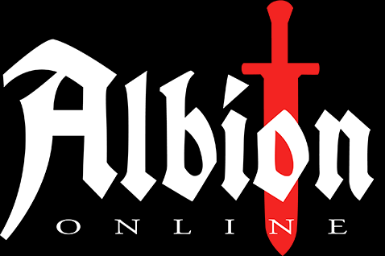
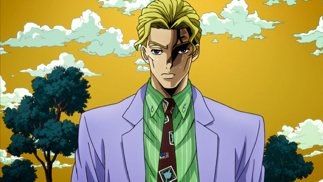
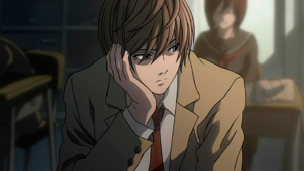

O que são Cospyastas?
Copypastas são textos que a internet só copia e cola nos lugares por algum motivo
Nessa página, eu vou listar minhas 5 copypastas favoritas
Albion Online é um MMORPG SandBox em que você escreve sua própria história, Invés de seguir um caminho pré-determinado. Explore um vasto mundo aberto que consiste de 5 ecosistemas únicos. Tudo que você faz gera um impacto no mundo, já que em Albion a economia é produzida pelo jogador. Cada peça de equipamento é construída por jogadores a partir de recursos obtidos por eles. O equipamento que você usa define quem você é, Ir de cavaleiro para feiticeiro é tão fácil quanto trocar a armadura e a arma ou uma combinação das duas. Aventure-se no mundo aberto e enfrente os habitantes e criaturas de Albion. Saia em expedições ou entre em masmorras para enfrentar inimigos ainda mais desafiadores. Enfrente outros jogadores em confrontos do mundo aberto, Lute pelo controle de territórios ou cidade inteiras em batalhas táticas em grupo. Relaxe descansando em sua ilha pessoal.Albion Online é um MMORPG SandBox em que você escreve sua própria história, Invés de seguir um caminho pré-determinado. Explore um vasto mundo aberto que consiste de 5 ecosistemas únicos. Tudo que você faz gera um impacto no mundo, já que em Albion a economia é produzida pelo jogador. Cada peça de equipamento é construída por jogadores a partir de recursos obtidos por eles. O equipamento que você usa define quem você é, Ir de cavaleiro para feiticeiro é tão fácil quanto trocar a armadura e a arma ou uma combinação das duas. Aventure-se no mundo aberto e enfrente os habitantes e criaturas de Albion. Saia em expedições ou entre em masmorras para enfrentar inimigos ainda mais desafiadores. Enfrente outros jogadores em confrontos do mundo aberto, Lute pelo controle de territórios ou cidade inteiras em batalhas táticas em grupo. Relaxe descansando em sua ilha pessoal.
Meu nome é Yoshikage Kira. Tenho 33 anos. Minha casa fica na parte nordeste de Morioh, onde todas as casas estão, e eu não sou casado. Eu trabalho como funcionário das lojas de departamentos Kame Yu e chego em casa todos os dias às oito da noite, no máximo. Eu não fumo, mas ocasionalmente bebo. Estou na cama às 23 horas e me certifico de ter oito horas de sono, não importa o que aconteça. Depois de tomar um copo de leite morno e fazer cerca de vinte minutos de alongamentos antes de ir para a cama, geralmente não tenho problemas para dormir até de manhã. Assim como um bebê, eu acordo sem nenhum cansaço ou estresse pela manhã. Foi-me dito que não houve problemas no meu último check-up. Estou tentando explicar que sou uma pessoa que deseja viver uma vida muito tranquila. Eu cuido para não me incomodar com inimigos, como ganhar e perder, isso me faria perder o sono à noite. É assim que eu lido com a sociedade e sei que é isso que me traz felicidade. Embora, se eu fosse lutar, não perderia para ninguém.
DIO: JOTARO
Jotaro: DIO
DIO: Hoho... mukatta kuruno ka? Nigetsu ni kono DIO no chikazuite kuruno ka?
Jotaro: Chikadzu kanaka teme wo buchi no me tenain de na.
DIO: HOHO! Dewa juubun chikazukanai youi.
The World: MUDAMUDAMUDAMUDAMUDAMUDAMUDAMUDAMUDAMUDAAAAAAAA
Star Platinum: ORAORAORAORAORAORAORAORAAAAAAAAA
Jotaro: NANI?!!
DIO: ZA WARUDO!!
TOMARE TOKI YOOOOOOO!! RODU ROURA!!!
incrivel a semelhança que eu tenho com o light yagami de death note, além de sermos literalmente iguais... temos o mesmo mindset, ambos somos extremamente frios e estrategistas em nossa forma de pensar e agir... bizarro '-' ele me representa muito, somos dois deuses nesse mundo...

Mario: Nice of the princess to invite us over for a picnic, eh Luigi?
Luigi: I hope she made lots of spaghetti!
Mario:Luigi, look! It's from Bowser..
Mario: "Dear pesky plumbers, the Koopalings and I have taken over the Mushroom Kingdom. The princess is now a permanent guest at one of my seven Koopa hotels! I dare you to find her if you can!"
Mario: We gotta find the princess!
Luigi: And you gotta help us!
Mario: If you need instructions on how to get through the hotels, check out the enclosed instruction book.